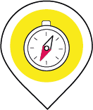
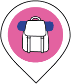
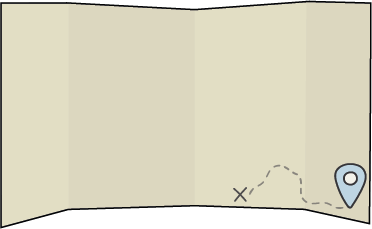

ברוכים הבאים! שמחים שהחלטתם לצאת לדרך יחד עם PIL.
ריכזנו עבורכם טיפים וכלים שעיזרו לכם למצוא את הדרך שלכם במערכת בקלות ובמהירות
כל מה שנשאר לכם, זה פשוט להתחיל לצעוד איתנו....
כדי להתמצא ולהתקדם
חפשו את הוראות ההגעה

ואת הצידה לדרך

שמחכים לכם לאורך המסע שנועדו להקל עליכם ולקדם אתכם אל היעד.
כל אחד מהם מכיל מידע שיעזור לכם להכיר את המערכת של PIL קצת יותר טוב.
את ההתקדמות שלכם תוכלו לראות על מפת הדרכים בסוף כל מקטע
